Casa moderna 3D
Este proyecto consiste en la creación de una casa moderna utilizando Blender. Se modelaron muros, ventanas, puertas y techos con medidas reales, además de aplicar materiales PBR para lograr una apariencia realista. Se buscó un diseño limpio y elegante, con iluminación ambiental realista mediante HDRI.
Habilidades adquiridas:
- Modelado de objetos
- Manejo de modelos
- Creación de texturas
- Mapeo de UVs
- Lectura de planos reales
- Manejo de iluminación
 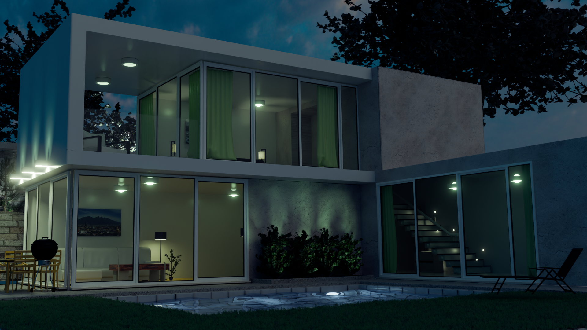
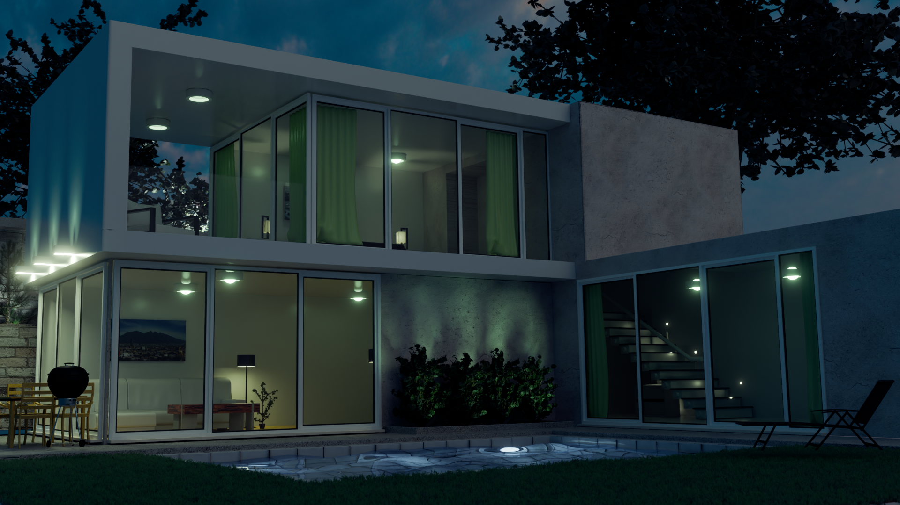
Etapas del proceso
1. Blockout
Se realizó una maqueta base (blockout) para establecer la forma general y proporciones de la casa. En esta etapa se definieron los volúmenes principales y la distribución espacial.
 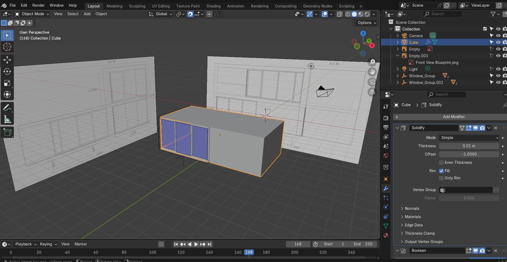
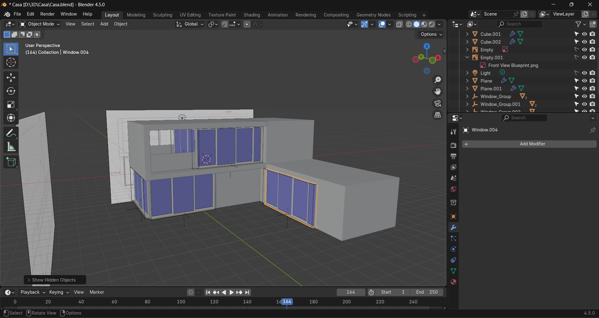
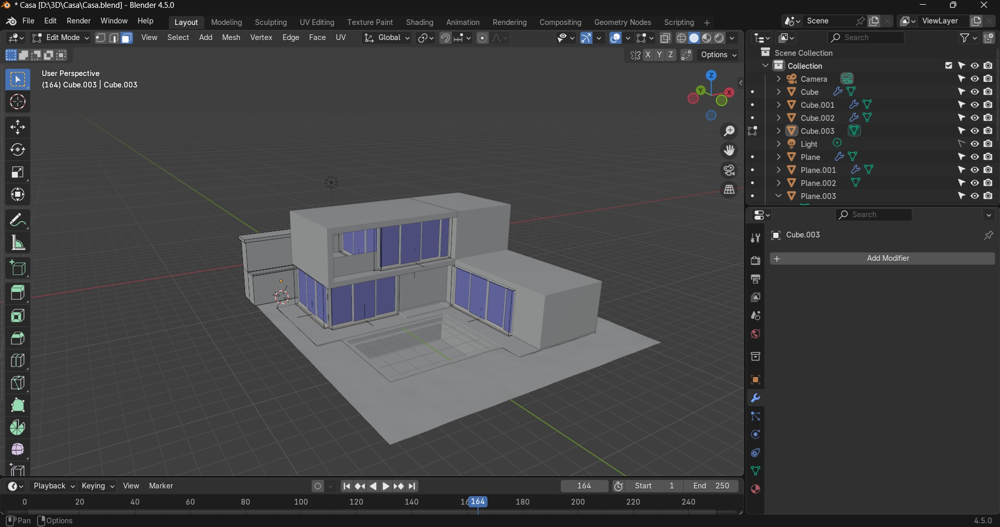
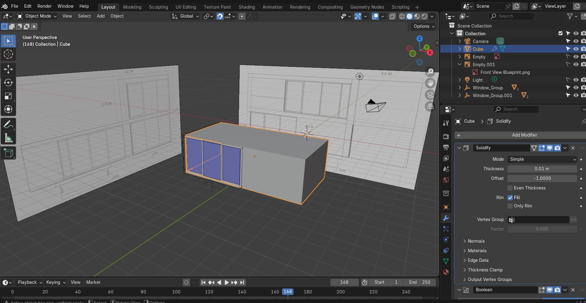
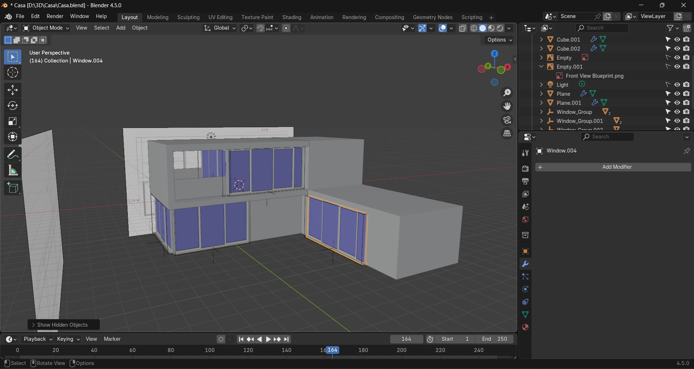
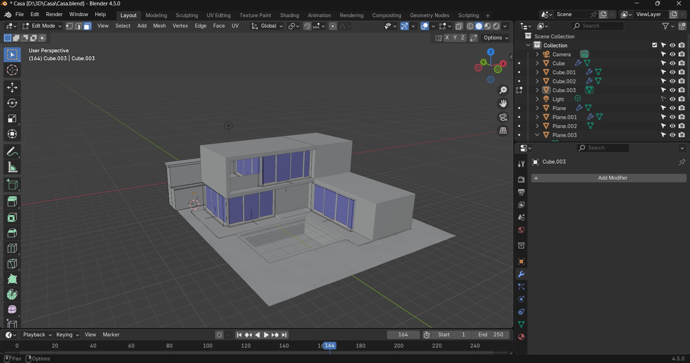
2. High Poly
Se detallaron los elementos arquitectónicos como marcos de ventanas, techos, columnas y molduras. Esta versión incluye mayor número de polígonos para capturar la riqueza visual.
 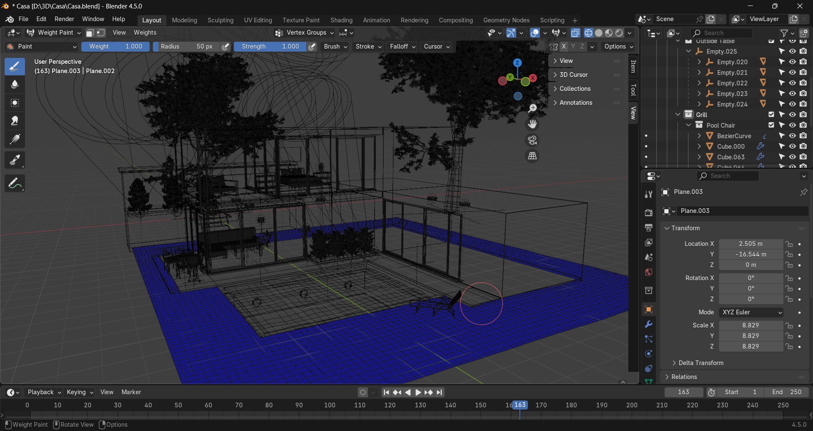
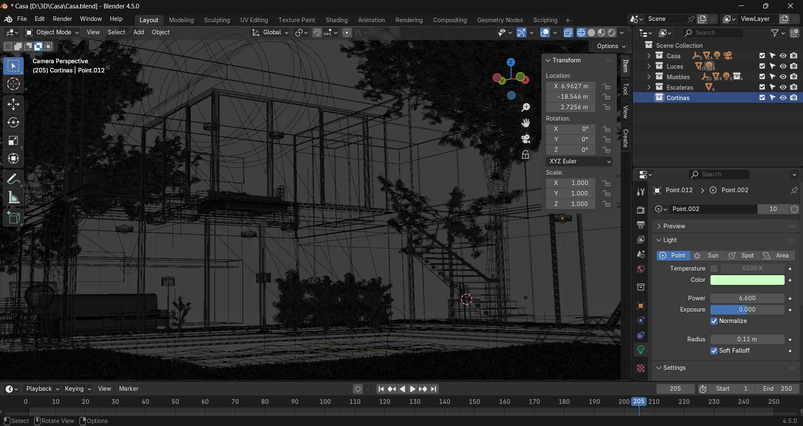
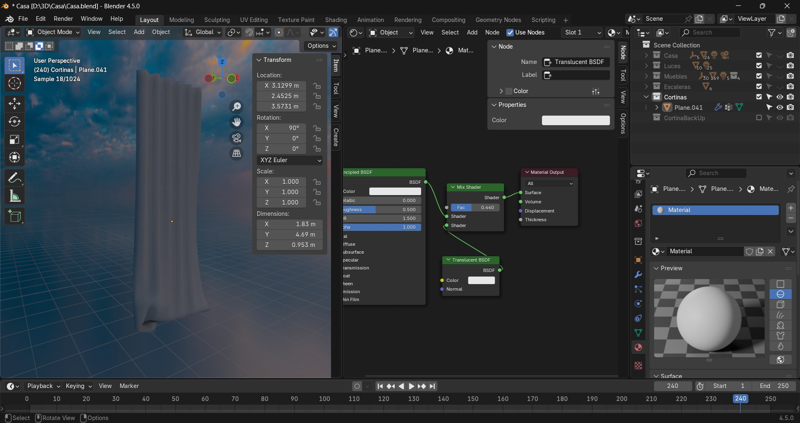
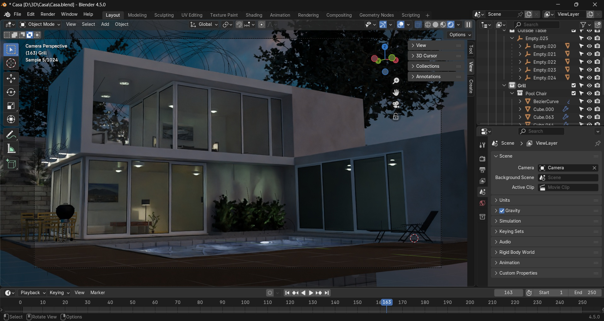
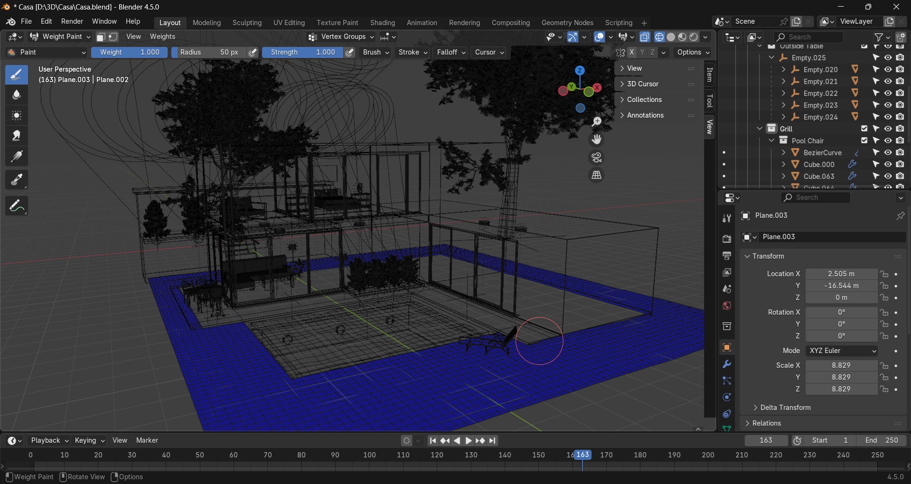
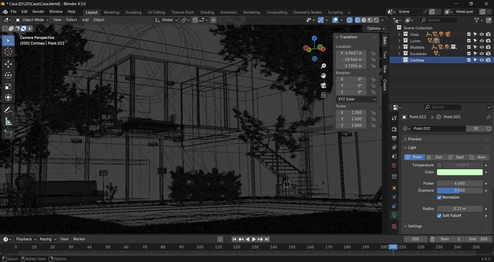
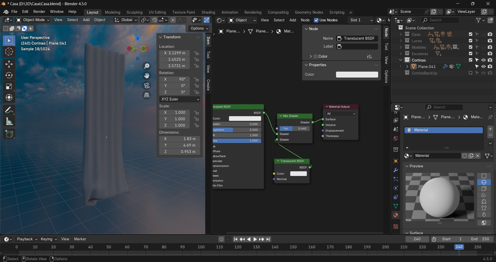
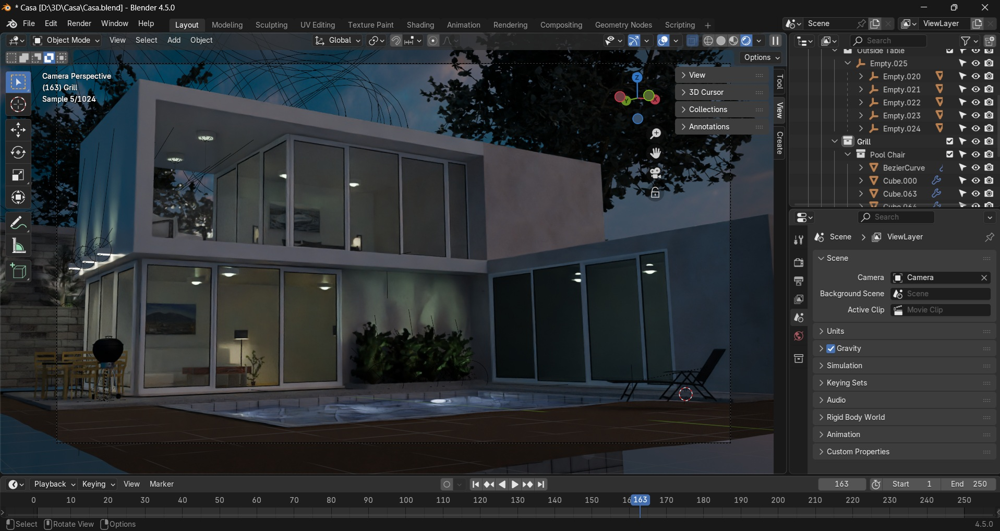
3. Low Poly
Se optimizó la geometría para mantener el detalle esencial pero reducir la cantidad de polígonos. Esta versión es ideal para visualizaciones en tiempo real o para exportar a motores como Unreal o Unity.
4. UV Mapping
Se desplegaron las coordenadas UV del modelo para preparar la superficie del objeto y así poder aplicar texturas sin distorsión.

5. Texturizado
Se aplicaron materiales y texturas utilizando nodos en Blender. Se usaron mapas PBR (difuso, normal, rugosidad) para lograr un acabado realista en paredes, cristales y concreto.
 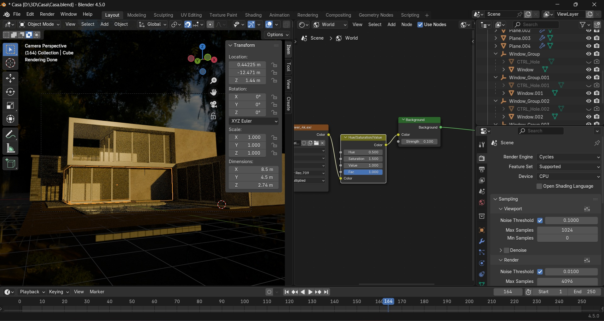
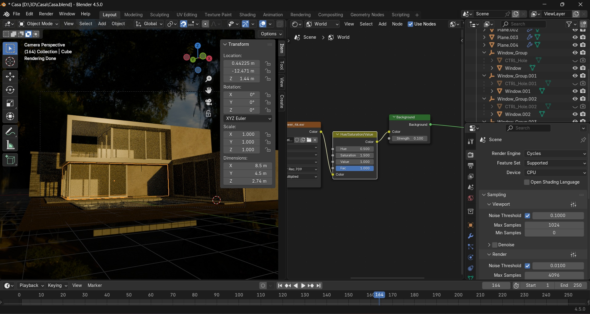

6. Renderizado
Se preparo la escena para ser renderizada, aqui encontramo el resultado final